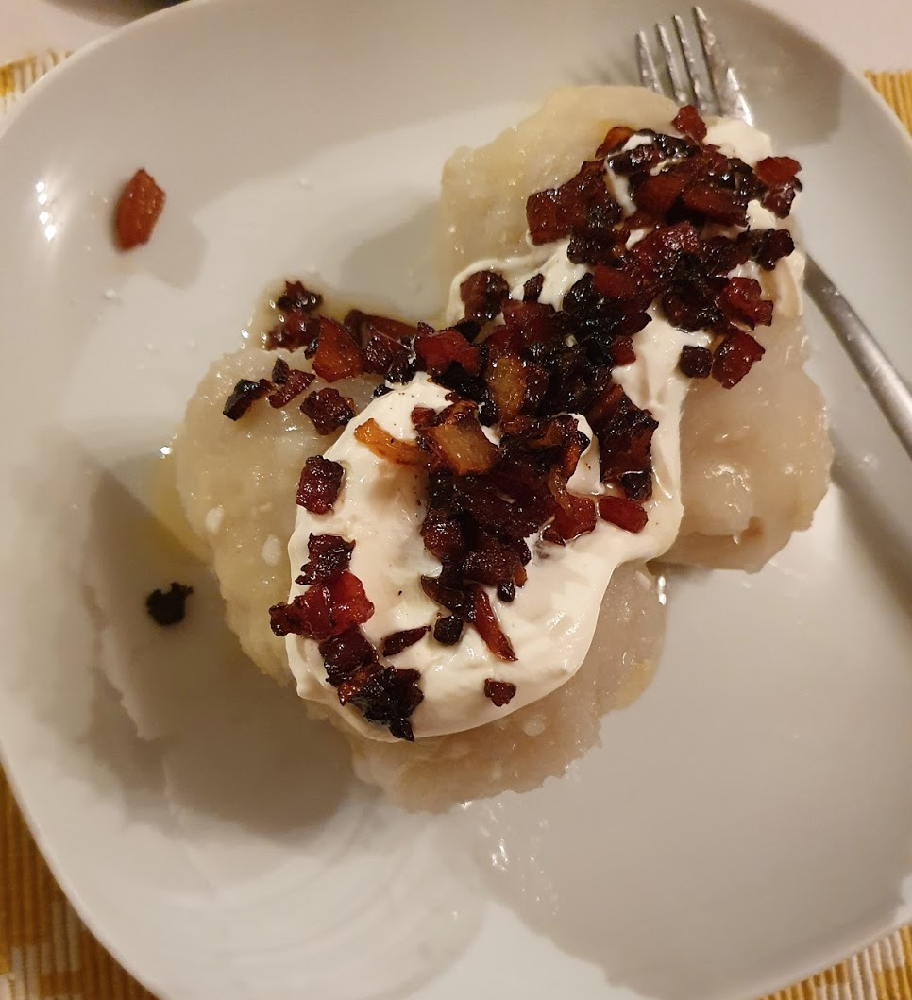

Cepelinai
Ingredients
Meat
- 0.4 kg ground pork (best 9 % fat)
- 1 chopped onions
- 1 egg
- salt, pepper
Curd
- 0.4 kg curd
- 1 egg yolk
- salt
Coating/Potatoes
- 4 kg potatoes
- 0.5 kg boiled and minced potatoes
- salt
Sauce
- 250 g bacon
- 1 chopped onion
- 50 g butter
Metods
- To make the sauce add the bacon, onion and butter to the pan and fry it for about 5 minutes.
- Mix the meat ingredients thoroughly.
- Mix the curd ingredients.
- Peel and grate potatoes, filter grate potatoes.
- Mix all coating ingredients with potato starch from grated potatoes
- Nib off a piece of coating and, then flatten it in a palm of a hand. Add some meat (or curd) to the middle, then close it and by rolling between the hands form a zeppelin. Wet your hands with some water, so the zeppelins would not stick to your hands.
- Add some salt to the boiling water. Put the zeppelins with meal into the boiling water and boil them for about 25–30 minutes or until they are done. The zeppelins with curd boil for about 15-20 minutes.
- Eat zeppelin with the sauce and sour cream or only wiht sauce or only with sour cream.
- Enjoy!